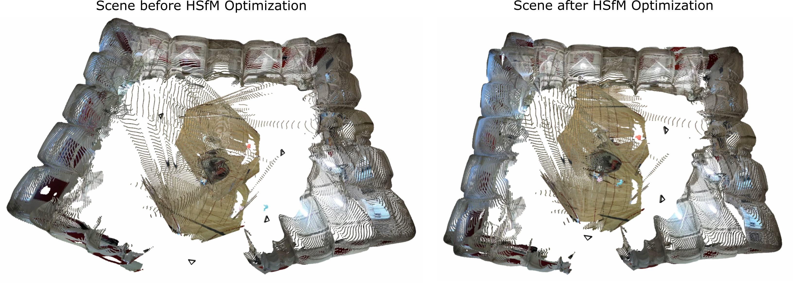
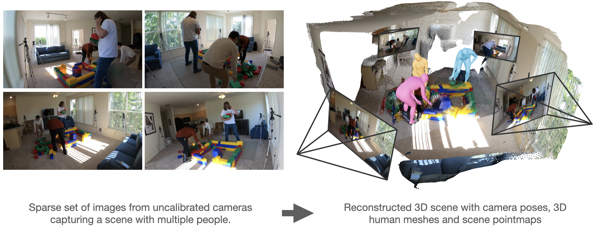
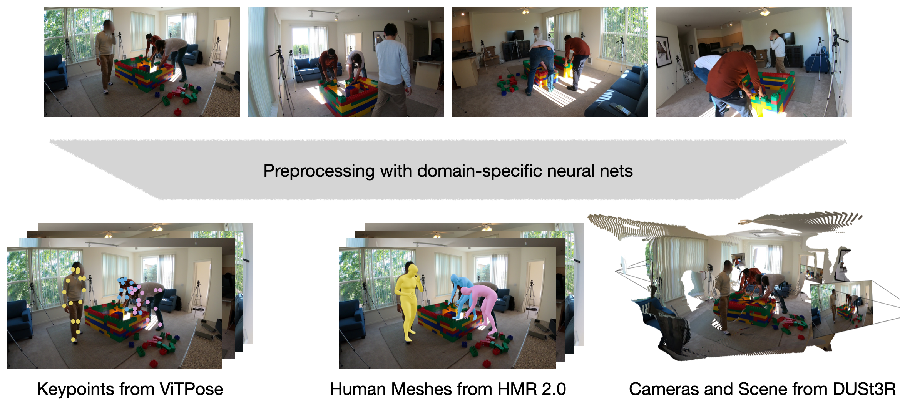
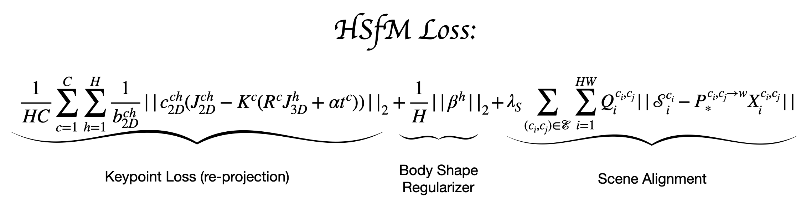
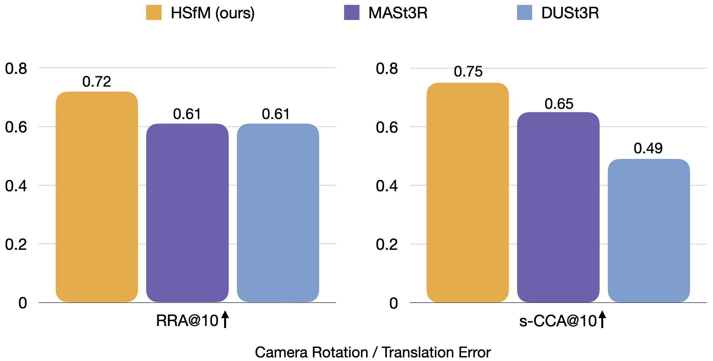

Our approach places people in the scene and improves camera pose and scene reconstruction. Here we show a top view of gym environment before HSfM optimization (DUSt3R output) and after optimization with HSfM Loss.

Humans and Structure from Motion enables capturing people interacting with their environment as well as the spatial positioning between individuals. Here we show a reconstruction of three people building Lego together.

Overview
Humans and Structure from Motion (HSfM) is a novel method that jointly reconstructs 3D humans, scene, and cameras from a sparse set of uncalibrated images. To achieve this, HSfM combines Human Mesh Recovery (HMR) methods for local human pose estimation and Structure from Motion (SfM) techniques for scene and camera reconstruction and to localize people. Specifically, our approach combines camera and scene reconstruction from data-driven SfM methods, such as DUSt3R, with the bundle adjustment step from traditional SfM applied to 2D keypoints where a human body model provides 3D human meshes and constrains human size.
Step by Step Method
-
Step 1: Input Processing and Feature Extraction
From the sparse input images, we extract 2D human joints using VIT-Pose and estimate 3D joint positions and body shape using HMR2. For scene and camera reconstruction, we use DUSt3R, a state-of-the-art data-driven SfM method. We assume known re-identification of people across camera views.
 -
Step 2: Resolving Scale Ambiguity
SfM methods often suffer from scale ambiguity. We address this by estimating camera parameters based on human body size and orientation. After alignment, people are roughly placed in a world of consistent scale.
-
Step 3: Joint Human and Scene Reconstruction
We adapt the global alignment loss from DUSt3R to jointly estimate humans and the scene. The HSfM loss consists of three terms: a keypoint re-projection term performing bundle adjustment on 2D body joints, a body shape regularizer, and the global alignment loss from DUSt3R. 

Evaluation
This joint reasoning not only enables accurate human placement in the scene. Notably, it also improves camera poses and the scene reconstruction itself. Evaluations on public benchmarks show significant improvements. Here we show the camera angle (RRA) and scaled translation (s-RTA) accuracy in percent at a threshold of 10 degree / meter on the EgoHumans benchmark.
